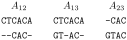

Exercise sheet 9: Progressive Alignment by Feng and Doolittle
Exercise 1 - Scoring Matrices
Lets warm up your brain a bit after a long break.
Determine the correct text by replacing the highlighted words with the correct anagrams:
Hide
Scoring matrices reflect the fact that amino acids with similar (A) isehcayhilccpmo properties can be more easily substituted than those without similar characteristics, since they are more likely to cause (B) rsistnupoid to the structure and function. This type of disruptive (C) uuttotsbnisi is less likely to be selected in evolution because it renders (D) iouanctfnlonn proteins.
PAM matrices, except PAM1, are derived from an (E) raniyeooutvl model. The increasing PAM numbers correlate with increasing PAM units and thus evolutionary (F) tsnascedi of protein sequences. For example, PAM250, which corresponds to about 20% amino acid (G) tyedniti, represents 250 mutations per 100 residues (a position could mutate several times). In theory, the number of (E) raniyeooutvl changes approximately corresponds to an expected (E) raniyeooutvl span of 2,500 million years. Thus, the PAM250 matrix is normally used for (H) neirtdgve sequences.
BLOSUM matrices are derived based on direct observation for every possible amino acid (C) uuttotsbnisi in multiple sequence alignments. Instead of using the (I) earoopatitnlx function, the BLOSUM matrices are actual percentage identity values of sequences selected for construction of the matrices. For example, BLOSUM62 indicates that the sequences selected for constructing the matrix share an average identity value of 62%.
This is why the PAM matrices are used most often for reconstructing (J) ogctnihpyele trees. However, because of the mathematical (I) earoopatitnlx procedure used, the PAM values may be less realistic for (H) neirtdgve sequences.
Solution
- physicochemical
- disruptions
- substitution
- nonfunctional
- evolutionary
- distances
- identity
- divergent
- extrapolation
- phylogenetic
Exercise 2 - Progressive Alignment by Feng and Doolittle
Given the sequences \(S_1 = CTCACA\), \(S_2 = CAC\), \(S_3 = GTAC\) and the following scoring function:
\[\begin{align} s(S_i,S_j) &= \begin{cases} +1 & if\ S_i = S_j \\ 0 & if\ (S_i \neq S_j) \lor ((S_i = \blacklozenge \lor S_j = \blacklozenge) \land (S_i = \blacklozenge \lor S_j = \blacklozenge))\\ -1 & else\\ \end{cases}\\ \end{align}\]
We want to do progressive alignment following Feng and Doolittle. The needed pairwise alignments are calculated using the Needleman-Wunsch and are as follows:

We want to follow one step of the algorithm introduced in the lecture. The following guide trees are given in Newick format.
2a)
Starting with the guide tree ((\(S_1\), \(S_3\)), \(S_2\)), what would be the starting \(group_1\)?
Hide
Solution
\(group_1\)
CTCACA
GT◆AC◆2b)
Use the Needleman-Wunsch algorithm to generate all pairwise alignments against \(group_1\) and calculate their respective similarity score.
Hide
Solution
\(a_1\)
CTCACA
--CAC-\(ss_1\) = 0
\(a_2\)
CTCACA
C--AC-
\(ss_2\)= 0
\(a_3\)
-C-AC-
GT◆AC◆
\(ss_3\)= 1
a4
C--AC-
GT◆AC◆\(ss_4\) = 1
2c)
Based on the previously calculated pairwise alignments what are the possible choices for \(group_2\)?
Hide
Solution
\(group_2\) (1)
CTCACA
-C-AC-
GT◆AC◆
\(group_2\) (2)
CTCACA
C--AC-
GT◆AC◆2d)
Calculate the sum-of-pairs scores for each of the possible \(group_2\) choices.
Hide
Solution
\(group_2\) (1)
CTCACA
-C-AC-
GT◆AC◆\(sp_1\) = 1
\(group_2\) (2)
CTCACA
C--AC-
GT◆AC◆\(sp_2\) = 2
2e)
Which alignment will be chosen as \(group_2\) for the next step?
Hide
Solution
CTCACA
C--AC-
GT◆AC◆2f)
Based on what you have learned, what are the alignments and sum-of-pairs scores for the guide tree ((\(S_2\), \(S_3\)), \(S_1\))?
Hide
Solution
\(group_2\) (1)
CTCACA
-◆CAC-
-GTAC-\(sp_1\) = 1
\(group_2\) (2)
CTCACA
◆-CAC-
G-TAC-
\(sp_2\) = 1
\(group_2\)(3)
CTCACA
◆C-AC-
GT-AC-\(sp_3\) = 1